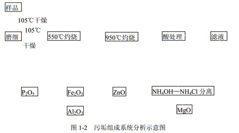

1.垢样必须在有代表性的水冷器，并具有传热面的管壁上采集，一般情况下， 不取封头和花板上的垢样。为了使每次污垢样品分析结果有可比性，应尽量在同一管程、同 一位号采集污垢样品。
2.记录采样地点（包括水冷器、管程、位号）以及水冷器工况条件（包括材质、 介质、温度、水流速等）。
3.记录采集垢样外观，包括颜色（褐色、灰白、棕红、灰褐等）， 外形（块状、 粒状、泥状等）及厚度。
4.采集样品，一般不得少于 5g。
1.如果垢样量大于 10g，按四分法缩分至 2g，移入瓷蒸发皿中，于 105±5℃下 干燥 2～8 小时。（ 时间长短根据试样含水量而定）
2.垢样稍冷后，于研钵中磨细到 50～100 目，然后于 105±5℃下干燥到恒重备 用。
